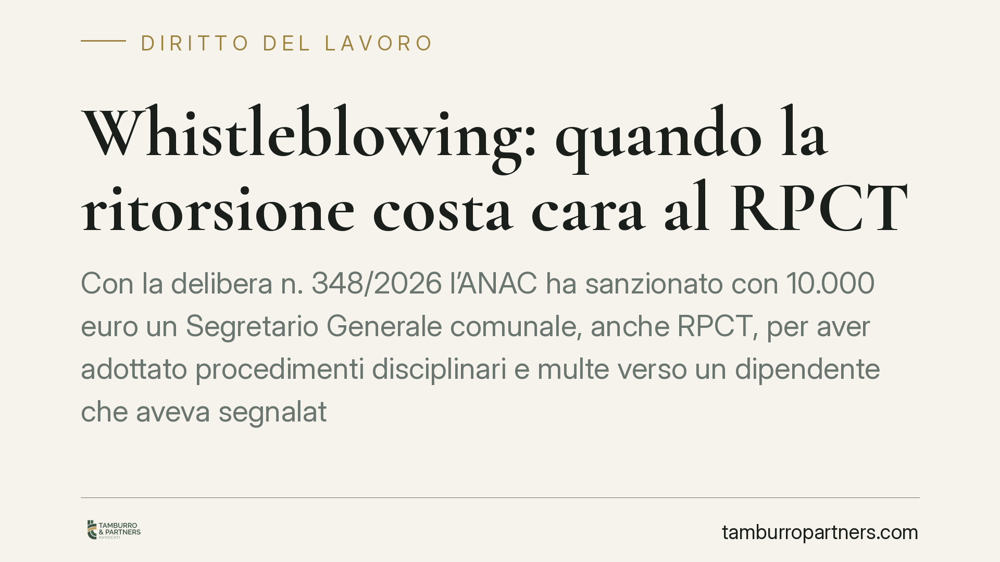

Whistleblowing: quando la ritorsione costa cara al RPCT
Con la delibera n. 348/2026 l'ANAC ha sanzionato con 10.000 euro un Segretario Generale comunale, anche RPCT, per aver adottato procedimenti disciplinari e multe verso un dipendente che aveva segnalato illeciti. L'Autorità ha riconosciuto il nesso ritorsivo previsto dall'art. 54-bis del d.lgs. 165/2001. Un precedente che chiarisce quanto sia rischioso reagire contro chi segnala.

Il caso
L'ANAC, con delibera n. 348/2026, ha inflitto una sanzione di 10.000 euro a un Segretario Generale di un Comune, che ricopriva anche il ruolo di Responsabile della Prevenzione della Corruzione e della Trasparenza (RPCT).
La contestazione riguarda le misure adottate nei confronti di un dipendente che aveva segnalato condotte illecite: procedimenti disciplinari e sanzioni pecuniarie che l'Autorità ha qualificato come ritorsive. Il punto centrale è che a rispondere non è stato un vertice politico o un dirigente estraneo, ma proprio la figura chiamata a tutelare chi segnala.
Inquadramento normativo
La cornice è l'art. 54-bis del d.lgs. 165/2001, che protegge il pubblico dipendente che segnala illeciti nell'interesse dell'integrità della pubblica amministrazione (il cosiddetto whistleblower). La norma vieta espressamente ogni misura ritorsiva collegata alla segnalazione.
La "ritorsione" è qualsiasi comportamento, atto o omissione che provoca al segnalante un danno ingiusto: dal licenziamento al demansionamento, dai procedimenti disciplinari pretestuosi alle sanzioni. La disciplina è stata ampliata dal d.lgs. 24/2023, che ha recepito la direttiva UE 2019/1937 estendendo le tutele anche al settore privato.
Un aspetto tecnico decisivo è il regime della prova. Una volta che il segnalante dimostra di aver effettuato la segnalazione e di aver subìto una misura sfavorevole, la legge presume il nesso ritorsivo: spetta a chi ha adottato la misura provare che si fondava su ragioni estranee alla segnalazione. Nel caso in esame l'ANAC ha ritenuto non superata questa presunzione.
Implicazioni pratiche
La delibera consolida un principio già presente nella prassi ma qui applicato con nettezza: il RPCT non gode di alcuna immunità. Anzi, la sua posizione di garanzia rende ancora più grave la condotta ritorsiva, perché contraddice la funzione stessa dell'incarico.
Per gli enti pubblici, e per i datori privati soggetti alla disciplina, il messaggio è chiaro. Ogni provvedimento sfavorevole adottato dopo una segnalazione entra in una "zona a rischio": andrà motivato con particolare cura e sorretto da elementi documentali che ne dimostrino l'autonomia rispetto alla segnalazione stessa.
Non basta che il procedimento disciplinare sia astrattamente fondato. Serve che il collegamento temporale e logico con la segnalazione non possa essere letto come reazione. In assenza di questa prova, il rischio è duplice: annullamento della misura e sanzione amministrativa a carico di chi l'ha disposta.
Va ricordato inoltre che le tutele operano anche quando la segnalazione si riveli infondata, purché il segnalante fosse in buona fede al momento della comunicazione. La protezione decade solo in presenza di dolo o colpa grave accertati.
Cosa fare in concreto
- Tracciate ogni segnalazione e conservate la documentazione dei procedimenti avviati nei confronti del segnalante, con date certe e motivazioni autonome.
- Separate i ruoli decisionali: chi valuta un eventuale procedimento disciplinare verso il segnalante dovrebbe, ove possibile, essere distinto da chi gestisce la segnalazione.
- Motivate in modo rafforzato qualsiasi misura sfavorevole successiva a una segnalazione, indicando le ragioni oggettive preesistenti e indipendenti.
- Formate il RPCT e i dirigenti sul regime dell'inversione dell'onere della prova: conoscerlo prima evita errori difficilmente rimediabili dopo.
- Verificate i canali interni di segnalazione e la loro effettiva riservatezza, presupposto di ogni protezione successiva.
Una nota di metodo
La vicenda mostra come il whistleblowing non sia un adempimento formale ma un sistema che incide su procedimenti disciplinari, organizzazione degli uffici e responsabilità individuali. Consigliamo di trattare ogni misura verso un segnalante come un atto da istruire con documentazione robusta, non come una normale iniziativa gestionale.
Chi ricopre incarichi di garanzia, in particolare, ha interesse a maturare la consapevolezza che il proprio comportamento è oggetto di scrutinio qualificato da parte dell'Autorità. La distanza tra un provvedimento legittimo e una condotta sanzionabile passa spesso dalla qualità della motivazione e dalla capacità di dimostrare l'assenza di intento ritorsivo.
---
*Contributo informativo a cura di Tamburro & Partners - Avv. Giuseppe Tamburro. Non costituisce parere legale.*
Ogni storia di lavoro ha i suoi tempi.
Se gestisci HR e vuoi un confronto su contenzioso, ispezioni o licenziamenti, scrivi allo studio. Ti rispondiamo entro un giorno lavorativo.